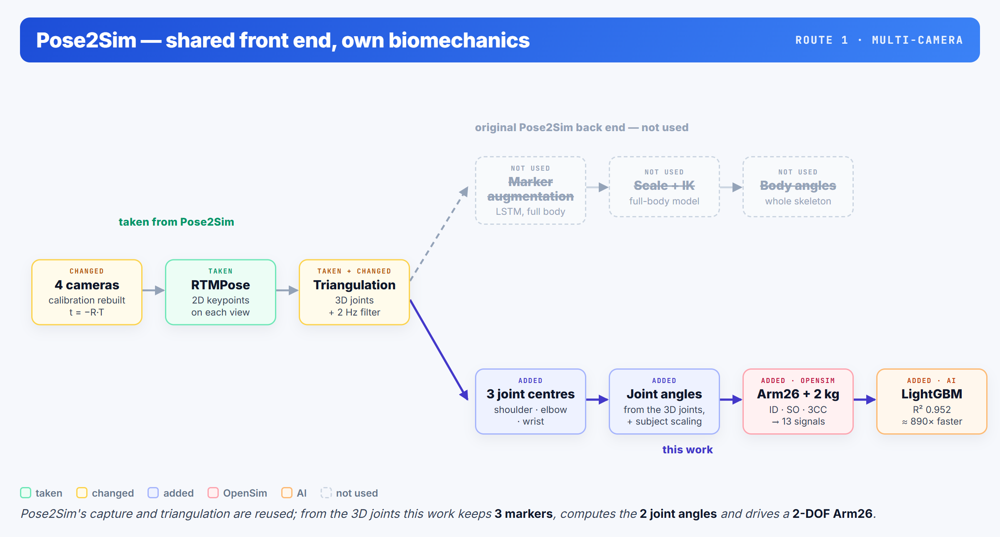
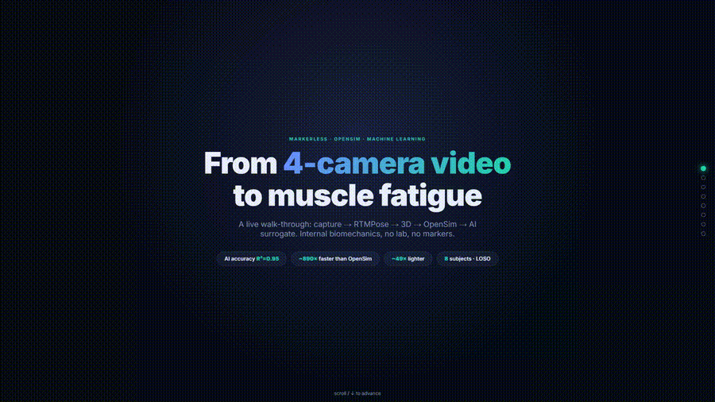
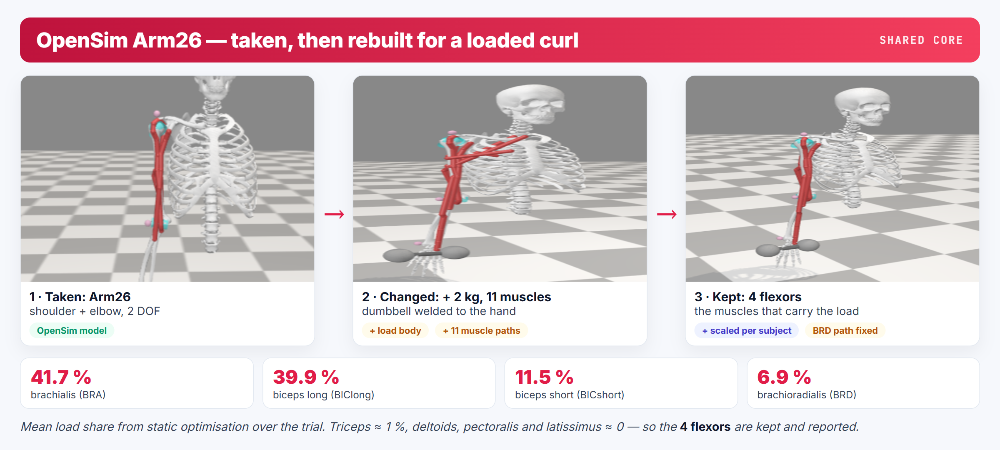
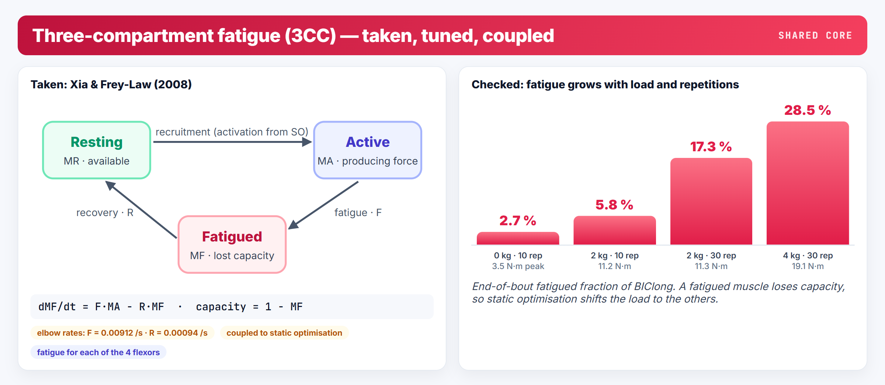
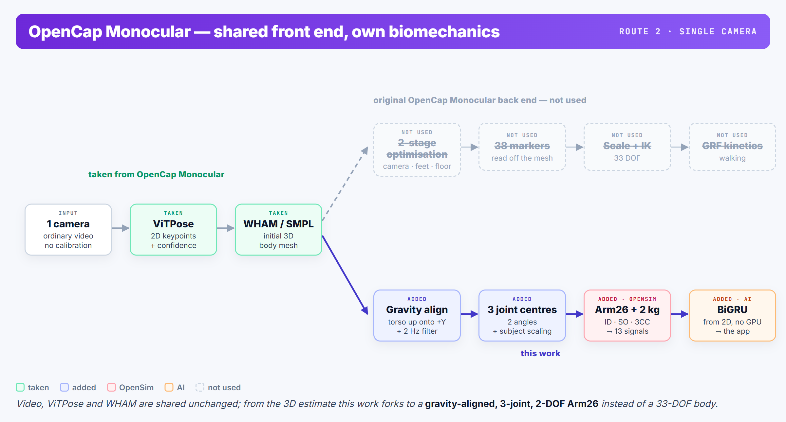
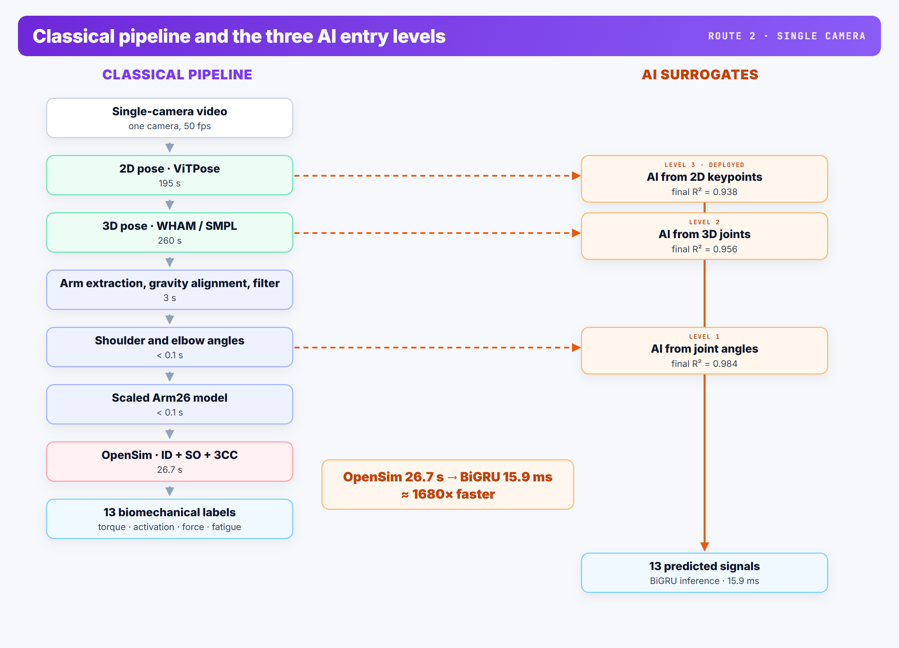

Muscle forces and fatigue from ordinary markerless video — Pose2Sim and OpenCap Monocular front ends, an OpenSim Arm26 model with 3CC fatigue, and an AI surrogate.






The application: one curl recorded on a phone → 13 signals; the torque peak marks the hardest moment of the lift.